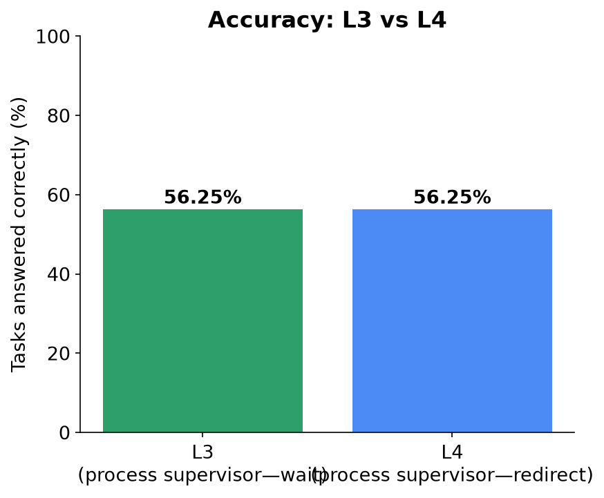
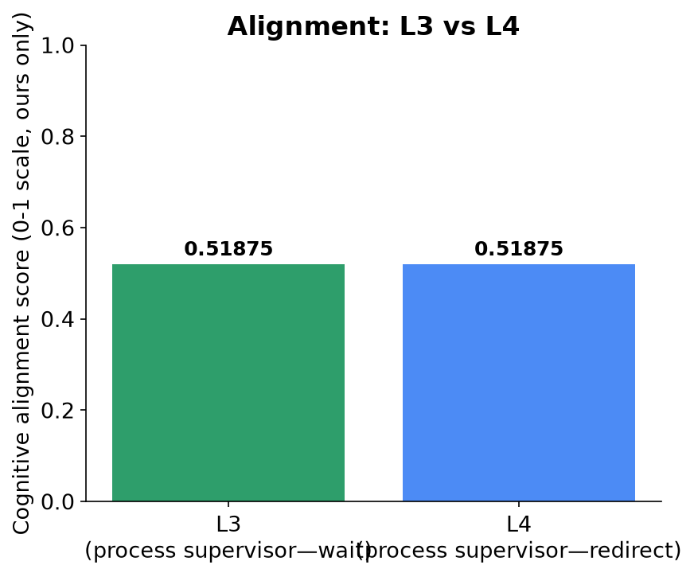
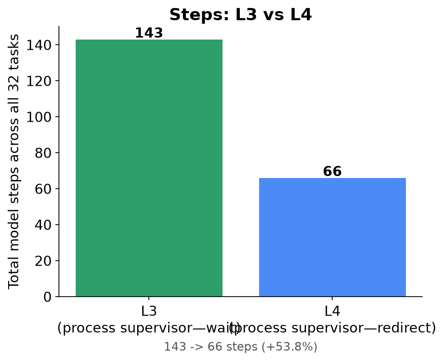
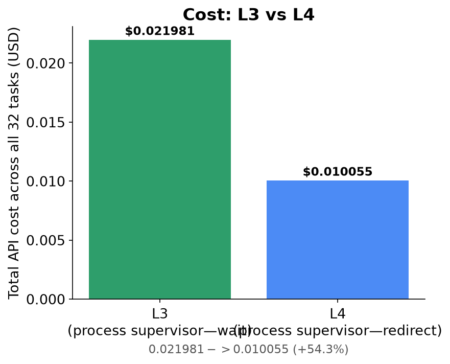
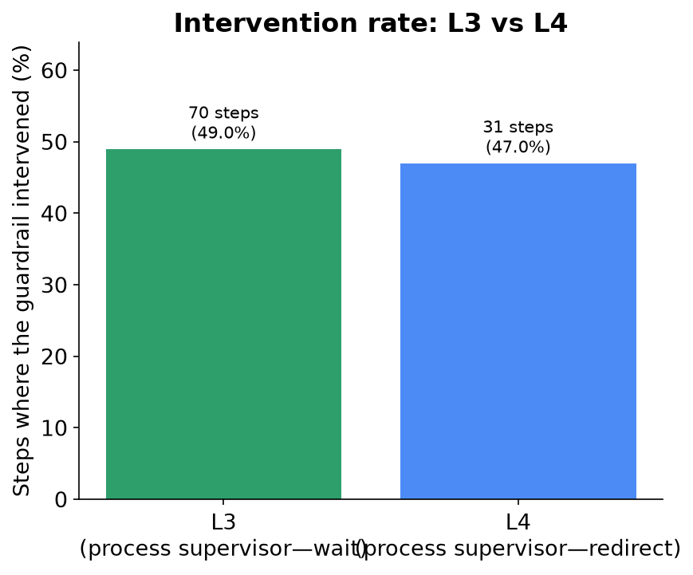
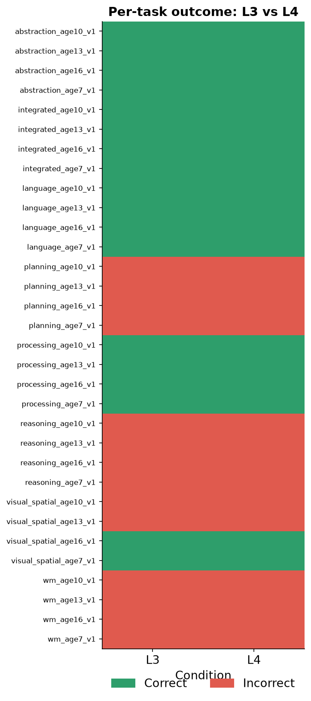
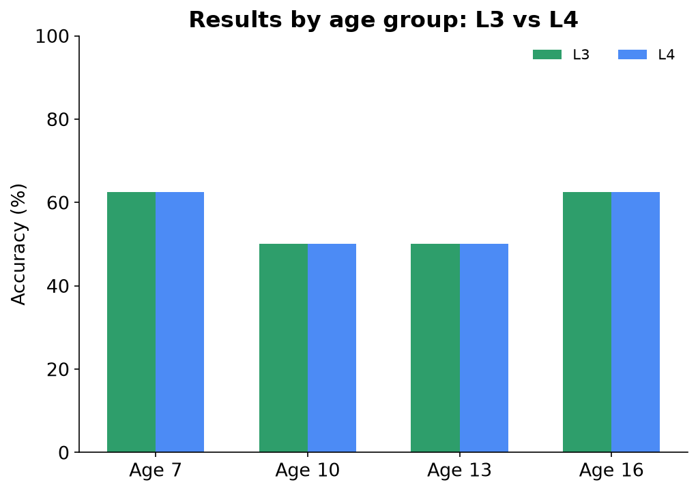
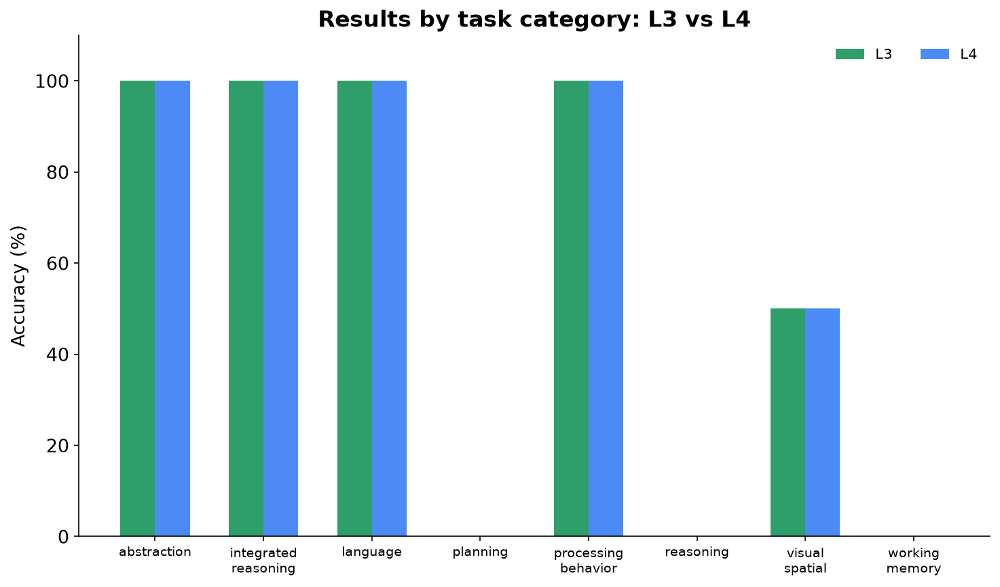

The Question
Can a guardrail reach the exact same task outcomes as L3, using less of the model's time and the project's budget?
L3 already showed that guardrails can change how an agent gets to an answer without changing which answer it submits. L4 asks a narrower question: can that same non-interference guarantee be kept while cutting the wasted steps out entirely?
What L4 Changes
L4 keeps L3's two triggers unchanged — the same repeated-action check, the same five-step excessive-steps cap — and changes only what happens once a repeat is detected:
| Level | On a detected repeat | Why |
|---|---|---|
| L3 | Substitutes a no-op "wait". |
Breaks the immediate loop, but the very next step is no longer seen as a "repeat" (the last executed action was "wait", not the click), so the model can — and does — propose the same click again, requiring a fresh wait each time until the excessive-steps cap eventually forces completion. |
| L4 | Forces "finish" immediately. |
Treats an exact repeat as evidence the model has nothing new to contribute this episode, and ends it right away rather than waiting out the step cap. |
How the Comparison Worked
- Same 32 tasks, same model (Qwen3.5-27B via OpenRouter), same temperature (0), same step budget, same scoring rules as the original L0-L3 run.
- L3: the existing, already-validated run
(
data/independent_benchmark/raw/L3.jsonl) — not re-run for this comparison. - L4: a fresh 32-task run executed for this comparison
(
data/independent_benchmark/raw/L4.jsonl). - Both conditions charged against the same $8 combined benchmark cost cap as L0-L3; L4's full run cost $0.010055 of that cap.
Accuracy

Identical accuracy — 18 of 32 tasks correct, both conditions.
Our ResultL3 and L4 scored exactly 56.25% — the same count, and (see Page 8) the same 32 individual tasks. No error bars: one deterministic run per condition (temperature 0).
Cognitive Alignment

Identical alignment: 0.51875.
Our ResultL4 preserved L3's alignment score exactly — consistent with L4 never changing which answer a task submits, only when the episode stops.
Steps, Cost, and Interventions



L4 reached the same outcomes at roughly half the cost.
Our Result
- Steps: 143 → 66 (53.8% fewer)
- Cost: $0.021981 → $0.010055 (54.3% less)
- Tokens: 98,318 → 45,137 (54.1% fewer)
- Interventions: 70 (48.95% of L3's steps) → 31 (46.97% of L4's steps) — fewer interventions and a shorter trajectory overall, because each L4 intervention ends the episode instead of repeating.
- Accuracy and alignment: unchanged
Task-by-Task Result

Zero outcome flips in either direction.
All 32 tasks landed on the identical correct/incorrect outcome under both conditions — 0 tasks flipped incorrect→correct, 0 flipped correct→incorrect. L4's efficiency gain did not come at the cost of a single task, and it did not buy any new correct answers either — it is a pure cost/step reduction on an unchanged outcome set.
What Does It Mean?
What we found
- L4 is a strict efficiency improvement over L3 on this benchmark: same accuracy (56.25%), same alignment (0.51875), same per-task outcomes (32/32 identical), at ~54% less cost, steps, and tokens.
- The gain comes entirely from ending a stuck episode the first time a repeat is detected, instead of L3's wait-then-re-detect-then-wait-again pattern that only terminates once the excessive-steps cap is hit.
What we cannot claim
- L4 does not raise accuracy above L3/L0 on any task or category — planning, reasoning, and working memory remain at 0% under L4, exactly as under L0-L3 (see Appendix). Ending a stuck episode sooner does not make a wrong answer right.
- This is not evidence that "redirecting" guardrail designs in general are unsound — only that the specific untried-target redirect tried first here was, for this benchmark's last-click-wins scoring rule (see Page 3).
- Same limitations as the original L0-L3 study apply: one run per condition, 32 tasks, one model, an original (not psychometrically validated) benchmark.
What we learned
HypothesisBecause the benchmark's tasks require very few genuinely productive steps (most tasks: one click, then finish), a trajectory that "gets stuck" is almost always stuck for the rest of the episode — so ending it immediately loses little useful search and buys back most of the wasted budget.
Limitations and Next Steps
Limitations
- L3's data is reused from the original run, not re-executed alongside L4 in the same session — both used identical config/model/temperature, so this is expected to be immaterial, but it is not a same-session apples-to-apples run.
- Single run per condition — no repeated trials, no variance estimate.
- A guardrail cannot see a task's interaction_kind or success_condition by design (no ground truth ever reaches it) — this is what made the discarded v1 redirect design unsafe, and constrains what any future guardrail here can safely attempt.
What to test next
- Test whether immediate-finish-on-repeat holds up on a benchmark with tasks that need more genuine multi-step exploration (where ending early risks cutting off real progress, not just a stuck loop).
- Investigate whether a guardrail can safely encourage retrying a different answer for interaction kinds where doing so cannot destroy an already-correct submission (e.g., only before any click has been made, never after).
- Repeat with multiple seeds to get real variance estimates on the efficiency gain.
Additional Data
A1. Results by age group

Identical at every age under both conditions — age 7: 5/8, age 10: 4/8, age 13: 4/8, age 16: 5/8.
A2. Results by task category

Identical in every category under both conditions: perfect scores in abstraction, integrated reasoning, language, and processing behavior; zero in planning, reasoning, and working memory; 50% in visual-spatial.